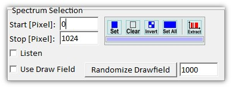
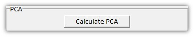
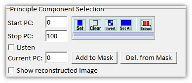
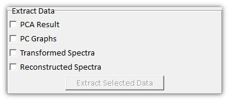
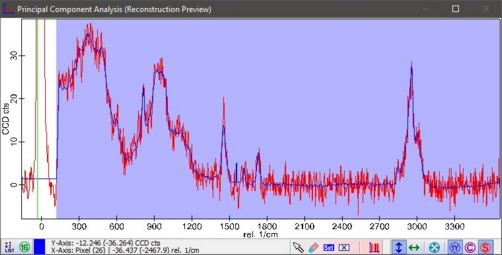
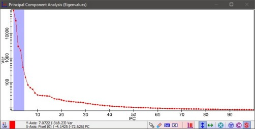

|
描述
主成分分析对话框进行主成分计算并允许提取其结果。
另请参见
输入和结果
输入：
结果：
请参见下方的"提取数据"。
用户界面
光谱选择

在此您可以选择
计算PCA

启动PCA计算。
主成分选择

在此您可以使用"特征值"预览的图谱掩码添加或移除主成分，请参见掩码操作工具。
选中的主成分用于计算重建光谱预览。
提取数据时仅使用选中的主成分。
显示重建图像
如果选中，将在预览中显示重建图像。
值"当前PC"定义哪个组件将被重建
添加到掩码 / 从掩码删除
添加或移除"当前PC"值的主成分。
提取数据
在此您可以选择按下"提取选定数据"按钮时应导出哪些结果。

PCA结果
向项目添加三个图谱对象：
通过单击特征值图谱，可以在特征向量中导航。
PC图谱
每个选中/标记的主成分的特征向量被提取为单个图谱对象。
变换光谱
选中的特征向量定义了一个新的坐标系。每个原始光谱可以在新坐标系中表示。对于每个选中的特征向量，计算一个新的坐标。
这些变换后的坐标存储在一个图谱对象中。
重建光谱
也可以对变换后的光谱进行反变换。输出等于重建预览窗口中的蓝色光谱。
预览窗口

重建预览
以红色显示原始数据，以蓝色显示重建预览光谱。
重建光谱使用主成分选择（特征值预览中的掩码）计算。
您可以操作掩码以定义哪些光谱范围应参与主成分计算。

特征值
显示排序后的特征值。
您可以操作掩码以定义哪些主成分应用于重建预览和提取数据。